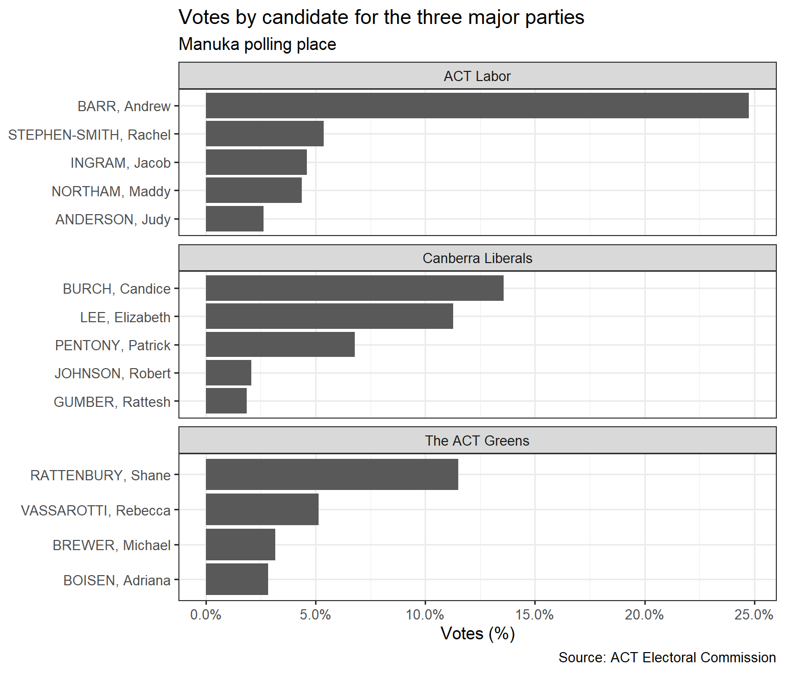

This package provides tidy datasets of ACT territory election results.
Installation
You can install the development version from GitHub with:
# install.packages("devtools") devtools::install_github("bryceroney/actvotes")
Datasets
This package currently contains the following datasets from the ACT Electoral Commission:
- 2019 Election: Candidates and First Preference results
Usage Example
act_fp_2019 %>% inner_join(act_candidates_2019, by=c("candidate"="ballot_paper_name")) %>% filter(polling_place == 'Manuka' & electorate == 'Kurrajong' & party %in% c('ACT Labor', 'Canberra Liberals', 'The ACT Greens')) %>% mutate(candidate = reorder(candidate, votes), votes = votes/sum(votes)) %>% ggplot(aes(x=candidate, y=votes)) + geom_col() + coord_flip() + scale_y_continuous(labels = scales::percent_format()) + facet_wrap(~party, scales='free_y', ncol=1) + labs( title = 'Votes by candidate for the three major parties', subtitle = 'Manuka polling place', y = 'Votes (%)', x = NULL, caption = 'Source: ACT Electoral Commission' ) + theme_bw()
